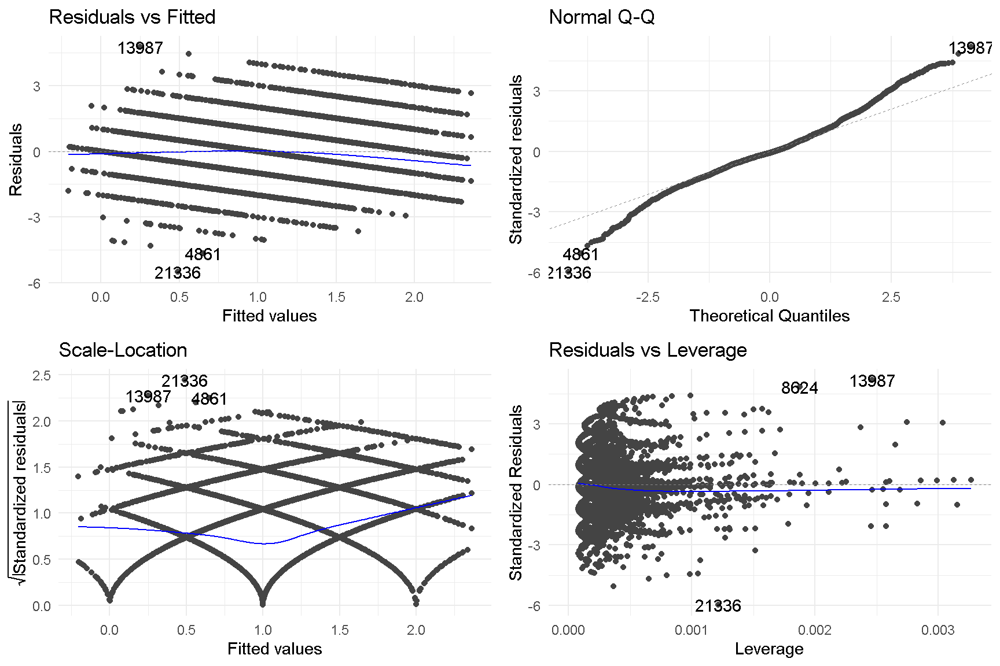

Introduction
This is the capstone project my partner (Ms Dxxx Nx) and I worked on for the Certified Data Analytics (R) Specialist course offered by Singapore Management University, taught by an inspiring Professor Sungjong Roh.
It is a culmination of about 6 months of learning, and about 1 months work.
Problem Statement
Property rights are the most fundamental institution in any economy and society. Apart from economic gains that property ownership confers, individual owners are more confident, self-reliant, and entrepreneurial than non-property owners. In countries where property ownership is highly skewed and accessible only to elites, income inequality could lead to uncertainty and a lack of overall optimism among non-property owners.
Our Capstone Project will attempt to determine if John Steinbeck is correct. Does property ownership lead to a better perception of oneself and greater optimism for the future?
Why is this important?
The findings of this project may influence how policies are implemented in Indonesia. If home-ownership leads to greater optimism and entrepreneurship among its people, this could positively impact the economy and political stability.
For our data science project, we activated the following packages, using the Tidyverse approach.
# Load necessary packages
pacman::p_load(tidyverse, lubridate ,glue, forcats, knitr, rmarkdown, gganimate, transformr,
scales, gridExtra, ggthemes, ggrepel, patchwork, DT,
jtools, huxtable, broom, modelr, skimr, psych, Hmisc,
gvlma, ggfortify, sandwich, car, ggstance, broom.mixed,
interactions)We chose theme_minimal() as the default theme for our plots.
theme_set(theme_minimal())We wrote a function to make it easier to present results from our models. Lets load it here.
# Function for model reporting (to make things look pretty)
model_variable_true_regression_function <-
function(name_of_model)
{
model_name <-
glue("{name_of_model}_variables")
model_name <-
name_of_model %>%
jtools::summ() %>%
broom::tidy()
model_regression_name <-
glue("{name_of_model}_regression")
model_regression_name <-
model_name %>%
.[,1:3] %>%
rename(b = estimate,
SE = std.error) %>%
mutate(Z95_x_SE = 1.96 * SE,
CI_95_upper_bound = b+Z95_x_SE,
significance_95 = ifelse(abs(b) > Z95_x_SE,
"sig", "NULL")
)
}Data Source
The RAND Indonesian Family Life Survey (IFLS) is an on-going longitudinal survey in Indonesia. The sample is representative of about 83% of the Indonesian population and contains over 30,000 individuals living in 13 of the 27 provinces in the country.
The fifth wave, IFLS-5, where our Capstone Project draws data from, was fielded 2014-15. More information about the survey can be found at this link.
Importing our Dataset
Our dataset was imported in a two-step process:
Step 1: The IFLS contained over 150 separate datasets in Stata (DTA) format. Our variables were drawn from 7 datasets. As the process of importing, extracting, recoding (wrangling), and combining datasets is only necessary to be performed once, this process is detailed in a separate Rmarkdown document named capstone_Import_data.Rmd. Click here for more details about this process.
The final dataset for use in our analysis is saved as capstone_data.csv.
Step 2: Here we import the dataset.
data_recoded<-
read_csv("capstone_data.csv")
glimpse(data_recoded)Rows: 36,581
Columns: 16
$ hhid14_9 <chr> "001060000", "001060004", "001060000", "001060000",
$ age <dbl> 59, 28, 39, 16, 30, 36, 26, 40, 55, 54, 34, 28, 24,
$ marstat <dbl> 2, 2, 2, 1, 2, 2, 1, 2, 2, 2, 2, 1, 1, 1, 2, 1, 5,
$ sex <dbl> 1, 3, 3, 3, 1, 1, 1, 3, 1, 3, 1, 1, 1, 1, 3, 3, 3,
$ pidlink <chr> "001060001", "001060004", "001060007", "001060008",
$ dl01f <chr> "M", "M", "M", "M", "M", "M", "M", "M", "M", "M", "
$ dl06 <dbl> 1, 1, 1, 2, 2, 1, 1, NA, 1, 1, 4, 4, 4, 4, 1, 2, 1,
$ sw00 <dbl> 1, 3, 2, 3, 2, 3, 3, 3, 2, 3, 1, 2, 2, 2, 2, 4, 3,
$ sw01 <dbl> 3, 2, 3, 3, 2, 2, 2, 2, 4, 3, 2, 2, 1, 3, 2, 3, 3,
$ sw03 <dbl> 4, 2, 3, 3, 2, 2, 3, 2, NA, 2, 2, 3, 5, 5, 3, 5, NA
$ tk01a <dbl> 0, 1, 1, 1, 1, 1, 1, 1, 1, 1, 1, 1, 1, 0, 1, 1, 0,
$ tr11 <dbl> 3, 2, 4, 3, 3, 2, 4, 3, 3, 3, 4, 3, 4, 3, 4, 3, 3,
$ kk01 <dbl> 2, 2, 2, 2, 2, 3, 3, 3, 2, 3, 3, 2, 3, 3, 3, 2, 2,
$ kr03 <dbl> 1, 0, 1, 1, 0, 1, 0, 1, 1, 1, 1, 1, 0, 0, 1, 1, 1,
$ female <dbl> 0, 1, 1, 1, 0, 0, 0, 1, 0, 1, 0, 0, 0, 0, 1, 1, 1,
$ fo01 <dbl> 1, 0, 0, 0, 0, 0, 1, 0, NA, -1, 0, 1, 4, 2, 1, 2, NThe data_recoded contained 36581 observations.
Preparing the Data for Regression
We prepare the data for regression by:
removing NA data,
renaming variables to more intuitive names (eg: employ vs tk01a for employment status),
using
mutateto recode each variable,using
cutto create a new variablegenerationsfromage, to hopefully provide opportunity for deeper analysis.
# Here we produce the final data set for regression
# There is an opportunity to rename variables here
data_regression<-
data_recoded %>%
drop_na() %>%
rename(home_own = kr03, #home ownership
employ = tk01a, # employment
religion = tr11, #religion
health = kk01, # health
edu = dl06, # education
outlook = fo01, # future outlook
life_sat = sw00, # current life satisfaction
current_econ = sw01, # current economic step
future_econ = sw03, # future economic step expectation
ethnicity = dl01f # ethnicity
) %>%
mutate(ethnicity = as.factor(ethnicity),
marstat = as.factor(marstat),
sex = as.factor(sex),
edu = as.factor(edu),
employ = as.factor(employ),
religion = as.factor(religion),
health = as.factor(health),
home_own = as.factor(home_own),
female = as.factor(female)
) %>%
mutate(birth_year = 2014 - age,
generations = cut(birth_year,
breaks = c(1900, 1927, 1945, 1964, 1980, 1996, 2012, 2020),
labels = c("Greatest Generation",
"Silent Generation",
"Baby Boomers",
"Gen X",
"Millenials",
"Gen Z",
"Gen Alpha")
)
)%>%
select(-hhid14_9, -pidlink, -birth_year) # removed hhid14_9 and pidlinkAfter wrangling and removal of missing data, it yielded 28432 responses.
Response and Explanatory Variables
The project attempts to answer the question Does property ownership lead to a better perception of oneself and greater optimism for the future?. As a measure of each individuals outlook for the future, we extracted two variables from the survey:
sw01 (named current_econ): On which economic step do you consider yourself now? Respondents were asked to rate themselves on a scale of 1 (poorest) to 5 (richest).
sw03 (named future_econ): On which economic step do you consider yourself to be in 5 years? Respondents were again asked to rate themselves on a scale of 1 (poorest) to 5 (richest).
From these 2 variables, we constructed a response variable Future Outlook (named outlook in the dataset), where:
A positive outlook score implies optimism about ones future, while a negative score implies pessimism.
We explored the impact of 10 explanatory variables on ones outlook. They are:
home_own: Home ownership, where a response of 0 indicated that the respondent did not own a property, while a response of 1 indicated property ownership.This is our variable of interest, and serves to answer our research question on the impact of property ownership on our outcome variable.
sex: Gender of respondents were coded 1 for male, and 3 for female.
marstat: Maritial status of respondents, coded 1 never married, 2 married, 3 separated, 4 divorced, 5 widow(er), 6 cohabitate
age/generations: responded as a numeric variable. In addition to age, we classified each respondent into his/her respective social generation using their year of birth. Greatest Generation (1900 to 1927), Silent Generation (1928 to 1945), Baby Boomers (1946 to 1964), Gen X (1965 to 1980), Millenials also known as Gen Y (1981 to 1996), Gen Z (1997 to 2012), and Generation Alpha (2020 to present).
life_sat: Life Satisfaction, where responses ranged from 1 for Not at all satisfied to 5 for completely satisfied.
edu: Education level of respondent, coded 0 for dont know, no schooling, or school for the disabled, 1 for kindergarten, elementary, islamic elementary, 2 for junior high (normal, vocational and Islamic), 3 for senior hi(normal, vocational and Islamic), 4 for college and university (undergraduate, masters, doctorate), and 5 for adult education, open university and Islamic school.
employ: Employment, coded 0 for unemployed or prefer not to say and 1 for employed
health: Respondents were asked to rank their physical health status. Responses were recoded as 1 for unhealthy, 2 somewhat unhealthy, 3 somewhat healthy and 4 healthy
religion: Respondents were asked how religious do they see themselves. Reponses were recoded as 0 refused to say, 1 not religious, 2 somewhat religious, 3 religious and 4 very religious.
ethnicity: We attempted to perform the analysis using ethnicity as a variable. However, as there were over 20 different classifications and sometimes multiple classifications per individual (mixed ethnicity), and given our lack of familiarity with ethnicity in Indonesia, this variable was subsequently dropped.
We use skim() from the skimr package to quickly provide a broad overview of the data.
skim(data_regression)| Name | data_regression |
| Number of rows | 28432 |
| Number of columns | 15 |
| _______________________ | |
| Column type frequency: | |
| factor | 10 |
| numeric | 5 |
| ________________________ | |
| Group variables | None |
Variable type: factor
| skim_variable | n_missing | complete_rate | ordered | n_unique | top_counts |
|---|---|---|---|---|---|
| marstat | 0 | 1 | FALSE | 6 | 2: 20653, 1: 5966, 5: 1128, 4: 554 |
| sex | 0 | 1 | FALSE | 2 | 3: 14926, 1: 13506 |
| ethnicity | 0 | 1 | FALSE | 82 | A: 12370, B: 3593, I: 1530, H: 1286 |
| edu | 0 | 1 | FALSE | 6 | 3: 9628, 1: 8551, 2: 5623, 4: 4190 |
| employ | 0 | 1 | FALSE | 2 | 1: 19042, 0: 9390 |
| religion | 0 | 1 | FALSE | 5 | 3: 17004, 2: 6041, 4: 4635, 1: 719 |
| health | 0 | 1 | FALSE | 4 | 3: 17183, 2: 5488, 4: 5463, 1: 298 |
| home_own | 0 | 1 | FALSE | 2 | 1: 21092, 0: 7340 |
| female | 0 | 1 | FALSE | 2 | 1: 14926, 0: 13506 |
| generations | 0 | 1 | FALSE | 6 | Mil: 11556, Gen: 9427, Bab: 4584, Gen: 2179 |
Variable type: numeric
| skim_variable | n_missing | complete_rate | mean | sd | p0 | p25 | p50 | p75 | p100 | hist |
|---|---|---|---|---|---|---|---|---|---|---|
| age | 0 | 1 | 36.19 | 14.23 | 14 | 25 | 34 | 45 | 101 | |
| life_sat | 0 | 1 | 3.33 | 0.80 | 1 | 3 | 3 | 4 | 5 | |
| current_econ | 0 | 1 | 3.05 | 0.92 | 1 | 3 | 3 | 4 | 6 | |
| future_econ | 0 | 1 | 4.16 | 1.19 | 1 | 3 | 4 | 5 | 6 | |
| outlook | 0 | 1 | 1.11 | 1.00 | -5 | 1 | 1 | 2 | 5 |
Exploratory Data Analysis
The mean age of our survey respondents is 36.2 years old. The plot below shows the age distribution of these respondents.
age_dist<-
data_regression %>%
ggplot(aes(x=age, fill = generations)
) +
geom_histogram(binwidth = 1,
alpha = 0.7)+
geom_vline(aes(xintercept = mean(age)
),
color = "blue")+
geom_text(aes(x = mean(age)-2, # add a text label for mean age
y = 500,
label = glue("Mean Age = {round(mean(age),1)}")
),
color = "blue",
size = 3,
angle = 90)+
scale_x_continuous(name = "Age",
limits = c(min(data_regression$age), max(data_regression$age)+5),
breaks = seq(from = min(data_regression$age), to = max(data_regression$age)+5, by = 5)
)+
labs(title = "Age Distribution of Survey Respondents",
y = "Number of Respondents")+
theme(legend.text = element_text(size = rel(0.6)),
legend.title = element_blank(),
legend.position = "bottom",
plot.title = element_text(size = rel(0.9)),
plot.subtitle = element_text(size = rel(0.8)),
axis.text.y = element_text(size = rel(0.6)),
axis.text.x = element_text(angle = 45, size = rel(0.6)),
axis.title = element_text(size = rel(0.7)
)
)+
guides(fill = guide_legend(nrow = 1))
age_distFigure 1: Age Distribution of Survey Respondents
Next, we explored respondents outlook by current economic standing.
outlook_dist2<-
data_regression %>%
ggplot(aes(x=outlook, fill = generations)
) +
geom_histogram(binwidth = 1) +
geom_vline(aes(xintercept = 0),
color="black") +
facet_wrap(~current_econ,
nrow=2,
scale = "free_y") +
labs(title = "Future outlook by perception of current economic standing",
y = "Number of Respondents")+
theme(legend.text = element_text(size = rel(0.7)),
legend.title = element_blank(),
legend.position = "bottom",
plot.title = element_text(size = rel(0.9)),
plot.subtitle = element_text(size = rel(0.8)),
axis.text.y = element_text(size = rel(0.7)),
axis.text.x = element_text(angle = 45, size = rel(0.7)),
axis.title = element_text(size = rel(0.7)
)
)+
guides(fill = guide_legend(nrow = 1))
outlook_dist2 Figure 2: Future Outlook of Respondents by Perception of Current Economic Standing
There are a couple of interesting observations. A majority of respondents who perceive themselves of low current economic standing (score 1 to 3) are optimistic about their future outlook (score > 0). On the other hand, respondents who perceive themselves of high current economic standing (score 5 and 6) are less optimistic of their future outlook.
Lastly, we look at Outlook by Current Economic Standing, for each generation. Here we can see different slopes across some generations, implying that there are interaction effects between age and current_econ. This will be explored later in our model.
data_regression %>%
ggplot(aes(x = current_econ,
y = outlook,
color = generations)
) +
geom_point(position = "jitter",
alpha = 0.1)+
geom_smooth(method = "lm",
se = FALSE,
color = "black")+
facet_wrap(.~generations)+
labs(title = "Outlook by perception of current economic standing",
y = "Outlook",
x = "Current Economic Standing")+
theme(legend.text = element_text(size = rel(0.7)),
legend.title = element_blank(),
legend.position = "none",
plot.title = element_text(size = rel(0.9)),
plot.subtitle = element_text(size = rel(0.8)),
axis.text.y = element_text(size = rel(0.7)),
axis.text.x = element_text(angle = 45, size = rel(0.7)),
axis.title = element_text(size = rel(0.7)
)
)Figure 3: Future Outlook of Respondents (facet by Generations) by Perception of Current Economic Standing
Correlation Analysis
For the preparation of the model, we created and ran a correlational matrix, to see how our variables of interest (within the model) are related.
data_regression %>%
select(-ethnicity, -generations) %>%
as.matrix() %>%
Hmisc::rcorr() %>%
broom::tidy() %>%
rename(variable_1 = column1,
variable_2 = column2,
corr = estimate) %>%
mutate(abs_corr = round(abs(corr),3),
corr = round(corr,3),
p.value = round(p.value,3)
) %>%
relocate(abs_corr, .after = corr) %>%
select(-n) %>%
arrange(-abs_corr) %>%
DT::datatable()We noted that life satisfaction had positive correlation of around 0.241 with current economic status, there is reason to believe they capture roughly something similar. We will exclude life satisfaction to reduce multicollinearity in our model.
Ordinary Least Square Model
We ran four regression models.
Barebones Base Model
In our basic model, we regressed home ownership (home_own) onto outlook (model1), to see the barebones relationship between home ownership and future outlook.
\[ \begin{eqnarray} \widehat{outlook} = intercept + b_1home\_own + \epsilon \end{eqnarray} \]
Call:
lm(formula = outlook ~ home_own, data = data_regression)
Residuals:
Min 1Q Median 3Q Max
-6.0609 -0.2635 -0.0609 0.7365 3.9391
Coefficients:
Estimate Std. Error t value Pr(>|t|)
(Intercept) 1.26349 0.01160 108.88 <2e-16 ***
home_own1 -0.20256 0.01347 -15.04 <2e-16 ***
---
Signif. codes: 0 '***' 0.001 '**' 0.01 '*' 0.05 '.' 0.1 ' ' 1
Residual standard error: 0.9942 on 28430 degrees of freedom
Multiple R-squared: 0.007888, Adjusted R-squared: 0.007853
F-statistic: 226 on 1 and 28430 DF, p-value: < 2.2e-16The results of the regression analysis was contrary to our expectations (John Steinbeck is WRONG)! Outlook appears to diminish (-0.203) if you own a property. We will investigate if the direction and magnitude of this relationship will continue when control variables are added to the model.
Model with Demographic Control Variables
We went on to add demographic controls to the model such as age and gender.
\[ \begin{eqnarray} \widehat{outlook} = intercept + b_1home\_own + b_2age + b_3female + \epsilon \end{eqnarray} \]
Call:
lm(formula = outlook ~ home_own + age + female, data = data_regression)
Residuals:
Min 1Q Median 3Q Max
-6.4856 -0.4892 -0.1379 0.5530 4.9017
Coefficients:
Estimate Std. Error t value Pr(>|t|)
(Intercept) 1.876092 0.018318 102.416 < 2e-16 ***
home_own1 -0.097145 0.013152 -7.386 1.55e-13 ***
age -0.019318 0.000405 -47.699 < 2e-16 ***
female1 0.015765 0.011374 1.386 0.166
---
Signif. codes: 0 '***' 0.001 '**' 0.01 '*' 0.05 '.' 0.1 ' ' 1
Residual standard error: 0.9565 on 28428 degrees of freedom
Multiple R-squared: 0.08183, Adjusted R-squared: 0.08173
F-statistic: 844.5 on 3 and 28428 DF, p-value: < 2.2e-16As age and gender are statistically significant in predicting future economic outlook, it is a good thing we controlled for them. Controlling for these characteristics, the effect size of home ownership increased. Here we use the model_variable_true_regression_function function which we wrote to prepare the models for reporting.
# Prepare models for reporting
model_used <- list(model1,
model2
)
lapply(model_used,
model_variable_true_regression_function)[[1]]
# A tibble: 2 6
term b SE Z95_x_SE CI_95_upper_bound significance_95
<chr> <dbl> <dbl> <dbl> <dbl> <chr>
1 (Intercept) 1.26 0.0116 0.0227 1.29 sig
2 home_own1 -0.203 0.0135 0.0264 -0.176 sig
[[2]]
# A tibble: 4 6
term b SE Z95_x_SE CI_95_upper_bound significance_95
<chr> <dbl> <dbl> <dbl> <dbl> <chr>
1 (Interce 1.88 1.83e-2 0.0359 1.91 sig
2 home_own1 -0.0971 1.32e-2 0.0258 -0.0714 sig
3 age -0.0193 4.05e-4 0.000794 -0.0185 sig
4 female1 0.0158 1.14e-2 0.0223 0.0381 NULL export_summs(model1,
model2,
model.names = c("Base Model",
"Base Model with \nDemographic Controls"),
digits = 3)
Base Model Base Model with
Demographic Controls
(Intercept) 1.263 *** 1.876 ***
(0.012) (0.018)
home_own1 -0.203 *** -0.097 ***
(0.013) (0.013)
age -0.019 ***
(0.000)
female1 0.016
(0.011)
N 28432 28432
R2 0.008 0.082
*** p < 0.001; ** p < 0.01; * p < 0.05. Column names: names, Base Model, Base Model with Demographic Controls
Initially, we had included marital status but when this variable was explored, we noticed that there are very few observations in some of the categories, this would make its inclusion in the model difficult as there is too little variation within group for analysis to take place.
We also considered ethnicity but there were some complications in analysing this. Did you know Indonesia has >1000 ethnic groups? Though the Javanese are the largest ethnic group, they do not form the majority. While we considered merging some groups together to reduce the number of groups as well as to increase the number of respondents within each group (some groups were very sparse with only a handful of respondents), without understanding the historical and cultural nuance, it was difficult to merge groups together. In addition, there were individuals who identified as belonging to more than one ethnic group.
Model with Current Economic Status
In our next model (model3), we added current economic outlook to the model with our two demographic controls. This allows us to compare the effect of home ownership on outlook while controlling for individuals who may be at different economic statuses currently.
model3 <-
lm(outlook ~ home_own + current_econ + age + female,
data = data_regression)
summary(model3)
Call:
lm(formula = outlook ~ home_own + current_econ + age + female,
data = data_regression)
Residuals:
Min 1Q Median 3Q Max
-5.7103 -0.5180 -0.0838 0.5364 4.4047
Coefficients:
Estimate Std. Error t value Pr(>|t|)
(Intercept) 2.7309365 0.0252729 108.058 < 2e-16 ***
home_own1 -0.0625284 0.0126863 -4.929 8.32e-07 ***
current_econ -0.2810045 0.0059494 -47.233 < 2e-16 ***
age -0.0205986 0.0003909 -52.692 < 2e-16 ***
female1 0.0575173 0.0109880 5.235 1.67e-07 ***
---
Signif. codes: 0 '***' 0.001 '**' 0.01 '*' 0.05 '.' 0.1 ' ' 1
Residual standard error: 0.921 on 28427 degrees of freedom
Multiple R-squared: 0.1486, Adjusted R-squared: 0.1485
F-statistic: 1241 on 4 and 28427 DF, p-value: < 2.2e-16Model Substituting Age with Generations
We took our final model one step further (model3_gen) by replacing age with generations, which allowed us to investigate if there were any changes to outlook by generations.
model3_gen <-
lm(outlook ~ home_own + current_econ + generations + female,
data = data_regression)
summary(model3_gen)
Call:
lm(formula = outlook ~ home_own + current_econ + generations +
female, data = data_regression)
Residuals:
Min 1Q Median 3Q Max
-5.6021 -0.4911 -0.0922 0.6299 4.0562
Coefficients:
Estimate Std. Error t value Pr(>|t|)
(Intercept) 1.520254 0.247518 6.142 8.26e-10
home_own1 -0.061593 0.012769 -4.823 1.42e-06
current_econ -0.275801 0.005973 -46.174 < 2e-16
generationsSilent Generation -0.300680 0.249642 -1.204 0.22843
generationsBaby Boomers -0.045644 0.247478 -0.184 0.85367
generationsGen X 0.401595 0.247293 1.624 0.10439
generationsMillenials 0.670277 0.247284 2.711 0.00672
generationsGen Z 0.738884 0.247939 2.980 0.00288
female1 0.059333 0.011038 5.376 7.70e-08
(Intercept) ***
home_own1 ***
current_econ ***
generationsSilent Generation
generationsBaby Boomers
generationsGen X
generationsMillenials **
generationsGen Z **
female1 ***
---
Signif. codes: 0 '***' 0.001 '**' 0.01 '*' 0.05 '.' 0.1 ' ' 1
Residual standard error: 0.9242 on 28423 degrees of freedom
Multiple R-squared: 0.1428, Adjusted R-squared: 0.1426
F-statistic: 591.9 on 8 and 28423 DF, p-value: < 2.2e-16When analyzed across generations rather than age, we observe contrasting effects. Analyzing by generation is essentially a comparison across the means of each group. Grouping the age variable allows comparison across groups which may have experienced different economic conditions and are at different life stages. In this analysis, our reference group is the Greatest Generation. This group consists of those born before 1927 and are the oldest group of respondents in the sample.
We see that the generations born after them are slightly more pessimistic about their future outlook (Silent Generation and Baby Boomers), though this is not statistically significant, hence it is possible that all those born before 1964 do not have notable differences in terms of future outlook.
However, when comparing the Greatest Generation with Millenials and Gen Z, we see that there are statistically significant differences. Compared to the Greatest Generation, Millenials are more optimistic about their future outlook. Similarly, Gen Zs are more optimistic than those in Greatest Generation. This may be expected, since younger generations have a longer way ahead of them and possess the energy to carve a road for themselves as compared to the Greatest Generation, who may be in their sunset years and do not see their outlook varying much in the coming years.
Model with Interactions
In our final model (model4), we consider the interaction effect of age on current economic status. Logically, there is reason to believe there is an interaction effect between these two terms. The effect of current economic status on future economic outlook is likely to differ by age.
For example, those who are in poorer current economic status may have a more pessimistic outlook, but those who are younger may be more optimistic than those who are older (maybe youthful vigor?). As such, we added this interaction term to capture these effects.
\[ \begin{eqnarray} \widehat{outlook} = intercept + b_1home\_own + b_2current\_econ + b_3age + b_4female + b_5current\_econ * age + \epsilon \end{eqnarray} \]model4 <-
lm(outlook ~ home_own + age*current_econ + female,
data = data_regression)
summary(model4)
Call:
lm(formula = outlook ~ home_own + age * current_econ + female,
data = data_regression)
Residuals:
Min 1Q Median 3Q Max
-5.4906 -0.5291 -0.0693 0.5213 4.7493
Coefficients:
Estimate Std. Error t value Pr(>|t|)
(Intercept) 3.1314562 0.0521275 60.073 < 2e-16 ***
home_own1 -0.0614472 0.0126699 -4.850 1.24e-06 ***
age -0.0311293 0.0012611 -24.683 < 2e-16 ***
current_econ -0.4117695 0.0160326 -25.683 < 2e-16 ***
female1 0.0575191 0.0109733 5.242 1.60e-07 ***
age:current_econ 0.0034563 0.0003936 8.781 < 2e-16 ***
---
Signif. codes: 0 '***' 0.001 '**' 0.01 '*' 0.05 '.' 0.1 ' ' 1
Residual standard error: 0.9198 on 28426 degrees of freedom
Multiple R-squared: 0.1509, Adjusted R-squared: 0.1508
F-statistic: 1011 on 5 and 28426 DF, p-value: < 2.2e-16We find the interaction term to be statistically significant
We will take a deeper look into this interaction effect in a way that is easier to visualise. Since current economic status runs from 1 to 6, we will treat it as a continuous variable.
interact_plot(model = model4,
pred= age,
modx = current_econ,
interval = T,
legend.main = "Current Economic Status",
main.title = "Interaction Plot for Model 4",
y.label = "Future Outlook",
x.label = "Age")+
theme(legend.position = "bottom")
Figure 4: Interaction Plot of Model 4
We see that those whose current economic statuses are better, seem to report lower future outlook scores even when compared across the same age. Based on this interaction plot, we see that the interaction effect is strongest when the respondent is young. As they get older, the effect of economic status on future outlook seems to diminish.
Simple Slopes Analysis
We also ran Simple Slopes Analysis to get a greater understanding of interacting effects in model4, using the sim_slopes() function from the interactions package.
sim_slopes(model = model4,
pred = current_econ,
modx = age,
johnson_neyman = T)JOHNSON-NEYMAN INTERVAL
When age is OUTSIDE the interval [103.99, 142.81], the slope of
current_econ is p < .05.
Note: The range of observed values of age is [14.00, 101.00]
SIMPLE SLOPES ANALYSIS
Slope of current_econ when age = 21.96236 (- 1 SD):
Est. S.E. t val. p
------- ------ -------- ------
-0.34 0.01 -38.96 0.00
Slope of current_econ when age = 36.18873 (Mean):
Est. S.E. t val. p
------- ------ -------- ------
-0.29 0.01 -47.97 0.00
Slope of current_econ when age = 50.41510 (+ 1 SD):
Est. S.E. t val. p
------- ------ -------- ------
-0.24 0.01 -30.71 0.00Based on the result, interaction effect is not significant above the age of 103.
Reporting of Results
Here is a summary of our four regression models:
model_used <- list(model1,
model2,
model3,
model4)
lapply(model_used,
model_variable_true_regression_function)[[1]]
# A tibble: 2 6
term b SE Z95_x_SE CI_95_upper_bound significance_95
<chr> <dbl> <dbl> <dbl> <dbl> <chr>
1 (Intercept) 1.26 0.0116 0.0227 1.29 sig
2 home_own1 -0.203 0.0135 0.0264 -0.176 sig
[[2]]
# A tibble: 4 6
term b SE Z95_x_SE CI_95_upper_bound significance_95
<chr> <dbl> <dbl> <dbl> <dbl> <chr>
1 (Interce 1.88 1.83e-2 0.0359 1.91 sig
2 home_own1 -0.0971 1.32e-2 0.0258 -0.0714 sig
3 age -0.0193 4.05e-4 0.000794 -0.0185 sig
4 female1 0.0158 1.14e-2 0.0223 0.0381 NULL
[[3]]
# A tibble: 5 6
term b SE Z95_x_SE CI_95_upper_bound significance_95
<chr> <dbl> <dbl> <dbl> <dbl> <chr>
1 (Interce 2.73 2.53e-2 0.0495 2.78 sig
2 home_own1 -0.0625 1.27e-2 0.0249 -0.0377 sig
3 current_ -0.281 5.95e-3 0.0117 -0.269 sig
4 age -0.0206 3.91e-4 0.000766 -0.0198 sig
5 female1 0.0575 1.10e-2 0.0215 0.0791 sig
[[4]]
# A tibble: 6 6
term b SE Z95_x_SE CI_95_upper_bound significance_95
<chr> <dbl> <dbl> <dbl> <dbl> <chr>
1 (Interc 3.13 5.21e-2 0.102 3.23 sig
2 home_ow -0.0614 1.27e-2 0.0248 -0.0366 sig
3 age -0.0311 1.26e-3 0.00247 -0.0287 sig
4 current -0.412 1.60e-2 0.0314 -0.380 sig
5 female1 0.0575 1.10e-2 0.0215 0.0790 sig
6 age:cur 0.00346 3.94e-4 0.000771 0.00423 sig export_summs(model1, model2, model3, model4,
model.names = c("Base Model",
"Base Model with Demographic Controls",
"Base Model, Demographic Controls,\nCurrent Economic Outlook",
"Base Model, Demographic Controls,\nCurrent Economic Outlook\nwith interactions"),
error_format = "[{conf.low}:{conf.high}]",
digits = 3)
Base Model Base Model Base Base
with Model, Model,
Demographi Demographi Demographi
c Controls c c
Controls, Controls,
Current Current
Economic Economic
Outlook Outlook
with
interactio
ns
(Intercept 1.263 *** 1.876 *** 2.731 *** 3.131 ***
)
[1.241:1.2 [1.840:1.9 [2.681:2.7 [3.029:3.2
86] 12] 80] 34]
home_own1 -0.203 *** -0.097 *** -0.063 *** -0.061 ***
[-0.229:-0 [-0.123:-0 [-0.087:-0 [-0.086:-0
.176] .071] .038] .037]
age -0.019 *** -0.021 *** -0.031 ***
[-0.020:-0 [-0.021:-0 [-0.034:-0
.019] .020] .029]
female1 0.016 0.058 *** 0.058 ***
[-0.007:0. [0.036:0.0 [0.036:0.0
038] 79] 79]
current_ec -0.281 *** -0.412 ***
on
[-0.293:-0 [-0.443:-0
.269] .380]
age:curren 0.003 ***
t_econ
[0.003:0.0
04]
N 28432 28432 28432 28432
R2 0.008 0.082 0.149 0.151
*** p < 0.001; ** p < 0.01; * p < 0.05.
Column names: names, Base Model, Base Model with Demographic Controls, Base Model, Demographic Controls, Current Economic Outlook, Base Model, Demographic Controls, Current Economic Outlook with interactions
The results of the models can also be shown visually. Here, we use plot_summs to show the estimates of models 1-4 visually.
plot_summs(model1, model2, model3, model4,
plot.distributions = T,
scale = T,
model.names = c("Base Model",
"Base Model with Demographic Controls",
"Base Model, Demographic Controls,\nCurrent Economic Outlook",
"Base Model, Demographic Controls,\nCurrent Economic Outlook\nwith interactions"),
point.size = 2)+
labs(title = "Comparing our Model Estimates : Models 1 to 4")+
theme(legend.position = "bottom",
legend.text = element_text(size = rel(0.6)),
legend.title = element_blank(),
plot.title = element_text(size = rel(0.9)),
axis.text.y = element_text(size = rel(0.7)),
axis.text.x = element_text(angle = 45, size = rel(0.7)),
axis.title = element_text(size = rel(0.7)
)
)
Figure 5: Comparing Models 1 to 4 Estimates
Evaluating Models using ANOVA
We analyzed the explanatory power of each model using the ANOVA function. The anova() function will take each models objects as arguments, and return an ANOVA testing whether the more complex model is significantly better than the simpler model. If the resulting p-value is sufficiently low (usually less than 0.05), we conclude that the more complex model is significantly better than the simpler model, and thus favor the more complex model. If the p-value is not sufficiently low (usually greater than 0.05), we should favor the simpler model.
anova(model1, model2) %>%
tidy()
term df.resid rss df sumsq statisti
ual c
outlook 2.84e+04 2.81e+04
~
home_own
outlook 2.84e+04 2.6e+04 2 2.09e+03 1.14e+03
~
home_own
+ age +
female
Column names: term, df.residual, rss, df, sumsq, statistic, p.value
6/7 columns shown.
The ANOVA result has a very small p-value (<0.001), indicating that model2 (with addition of age and gender) did lead to a significantly improved fit over model1.
Next we compare between model2 and model3.
anova(model2, model3) %>%
tidy()
term df.resid rss df sumsq statisti
ual c
outlook 2.84e+04 2.6e+04
~
home_own
+ age +
female
outlook 2.84e+04 2.41e+04 1 1.89e+03 2.23e+03
~
home_own
+
current_
econ +
age +
female
Column names: term, df.residual, rss, df, sumsq, statistic, p.value
6/7 columns shown.
Once again, the ANOVA result has a very small p-value (<0.001), indicating that model3 (with addition of current_econ) led to a significantly improved fit over model2.
Lastly, we compare between model3 and model4, to ascertain whether adding interaction effects improved the model.
anova(model3, model4) %>%
tidy()
term df.resid rss df sumsq statisti
ual c
outlook 2.84e+04 2.41e+04
~
home_own
+
current_
econ +
age +
female
outlook 2.84e+04 2.4e+04 1 65.2 77.1
~
home_own
+ age *
current_
econ +
female
Column names: term, df.residual, rss, df, sumsq, statistic, p.value
6/7 columns shown.
The ANOVA test result tells us that model4 (with interaction effects), improves on model3. We will report model4 as our final result.
Assumption Check using GVLMA
We checked the linearity assumptions of model4 using the Global Validation of Linear Model Assumption (gvlma) package. Unfortunately, the model failed global stats, skewness, kurtosis, link function and heteroskedasticity assumptions.
gvlma (model4)
Call:
lm(formula = outlook ~ home_own + age * current_econ + female,
data = data_regression)
Coefficients:
(Intercept) home_own1 age
3.131456 -0.061447 -0.031129
current_econ female1 age:current_econ
-0.411770 0.057519 0.003456
ASSESSMENT OF THE LINEAR MODEL ASSUMPTIONS
USING THE GLOBAL TEST ON 4 DEGREES-OF-FREEDOM:
Level of Significance = 0.05
Call:
gvlma(x = model4)
Value p-value Decision
Global Stat 2396.96 0.000e+00 Assumptions NOT satisfied!
Skewness 456.70 0.000e+00 Assumptions NOT satisfied!
Kurtosis 1868.33 0.000e+00 Assumptions NOT satisfied!
Link Function 58.05 2.565e-14 Assumptions NOT satisfied!
Heteroscedasticity 13.88 1.945e-04 Assumptions NOT satisfied!We tested model3 using gvlma. There was some improvement with link function assumptions being acceptable.
gvlma (model3)
Call:
lm(formula = outlook ~ home_own + current_econ + age + female,
data = data_regression)
Coefficients:
(Intercept) home_own1 current_econ age female1
2.73094 -0.06253 -0.28100 -0.02060 0.05752
ASSESSMENT OF THE LINEAR MODEL ASSUMPTIONS
USING THE GLOBAL TEST ON 4 DEGREES-OF-FREEDOM:
Level of Significance = 0.05
Call:
gvlma(x = model3)
Value p-value Decision
Global Stat 2.258e+03 0.0000000 Assumptions NOT satisfied!
Skewness 4.820e+02 0.0000000 Assumptions NOT satisfied!
Kurtosis 1.761e+03 0.0000000 Assumptions NOT satisfied!
Link Function 7.020e-03 0.9332272 Assumptions acceptable.
Heteroscedasticity 1.453e+01 0.0001379 Assumptions NOT satisfied!We attempted to transform the data (squaring and log transformation), but it still resulted in Assumptions not satisfied.
We concluded that this is likely due to the fact that most of our variables are categorical variables.
Here is a visual representation of the core information of assumption checks for model4.
autoplot(gvlma(model4))
Check Multicollinearity using VIF
We perform a check for multicollinearity using the Variance Inflation Factor or vif from the car package. Multicollinearity occurs when there is a correlation between multiple independent variables in a multiple regression model. This can negatively impact the regression results. The VIF test measures the correlation and strength of correlation between the independent variables in a regression model.
vif(model4,
type = "predictor")
GVIF Df GVIF^(1/(2 Interacts Other
*Df)) With Predictors
1.03 1 1.02 -- age,
current_ec
on, female
1.04 3 1.01 current_ec home_own,
on female
1.04 3 1.01 age home_own,
female
1.01 1 1 -- home_own,
age,
current_ec
on
Column names: GVIF, Df, GVIF^(1/(2*Df)), Interacts With, Other Predictors
Within model4, all 4 variables report a GVIF of close to 1, suggesting that multicollinearity does not exist within the model.
Interpretation of the Results
From our data science project, we found the following findings:
The relationship between ones outlook and ownership of property, contrary to our expectations, appears to be a negative one. In our barebones
model1, owning a property resulted in a decrease in outlook by -0.203.The effects size of home ownership on outlook increased (-0.097) when we added demographic control variables, age and gender, to the model (
model2). Age appeared to have a negative effect on outlook (-0.019), while females were marginally more positive than males (0.016). These findings persisted across all models.The effect of home ownership on outlook improved further (-0.063) when we considered the respondents current economic background. Interestingly, the model suggests that outlook decreased (-0.281) as ones current economic status increased. As discussed earlier, this makes sense as a respondent who is already leading a very successful and well life (and indicated it as the maximum score on the scale), would either see it remaining that way (0 change) or it getting worse (negative score). Adding current economic status to our model allows us to compare between groups of differing current economic status (i.e.those of the same baseline).
Lastly, we concluded that there was an interaction effect between age and current economic status. The effect size of home ownership on outlook increased further (-0.061) and the estimated effect of interaction term age * current_econ is positive (0.003) and significant, though it diminishes with age. Across the same age, those who are worse off now report a better future economic outlook. I guess when you are down, the only way is up :)
Threats to Causal Inference
Confounders: Demographic variables (age and gender) and current economic status were identified as `confoundersthat could influence both home ownership and outlook. These were controlled and included in the model. Additionally, the interacting effect between age and current economic status was identified and accounted for in our finalmodel4. In spite of our best efforts, there may still be omitted variable bias in our model are likely unobservable variables which we failed to capture. For example, terminal illnesses and degree of autonomy are other factors that could affect future outlook.Colliders: Among the variables we have considered, we did not identify any colliders that we know of. Given that our predictor variable is home ownership, it could be that certain policies which are based on home ownership that could affect the future outlook of respondents are not captured.Counterfactuals: The role of counterfactuals, ie: what would have happened to your unit of analysis if the treatment had not occurred, could be explored through simulations.
Implications
The results of our data science project was surprising, as we had expected home ownership to have a positive effect on outlook. The barebones model1 rejected this hypothesis, but the effects decreased after the inclusion of age, gender, and current economic status.
Limitations and Future Directions
Indonesia is a large country with a relatively small urban population of 58 percent (as a percentage of total population). It is ranked 126th in terms of urban population percentage by the World Bank.(https://data.worldbank.org/indicator/SP.URB.TOTL.IN.ZS)
It would be interesting to expand the scope of this study to other countries or cities with greater urban population percentages. Would the findings be the same if survey respondents lived in land-scarce urbanized cities such as New York, Shanghai, or Singapore where housing is very expensive? The bar to owning a home in rural parts of Indonesia, where land is comparatively much cheaper, may be much lower than in urbanized cities, and hence not have much impact at all on ones outlook for the future.
Singapore would be an ideal candidate to repeat this study. In recent years, property prices have skyrocketed and the younger generation are fretting over their ability to purchase their own home. We can already see the Government tweaking it policies to rein in property prices. A study done here could provide the Government with more information about how to further tweak its policies.
Grapes of Wrath was published in 1939, while the IFLS was conducted in 2014-15. Perhaps attitudes towards property ownership might have changed over the course of 75 years? Maybe Steinbeck is correct after all, but in his era of 1930s-40s. Attitudes and importance of home ownership may likely have changed through the years.
Lastly, 8,149 observations (22 percent) were dropped from the study due to incomplete data, or duplicate entries. This could have impacted the results of the study, or the statistical power of our models. However, we are limited in our ability to handle missing data as we are not involved in study design, data collection, or data entry.
References
[RAND Indonesian Family Life Survey] (https://www.rand.org/well-being/social-and-behavioral-policy/data/FLS/IFLS.html).
Run sessionInfo()
packages_utilized <-
sessionInfo()
packages_utilizedR version 4.3.2 (2023-10-31 ucrt)
Platform: x86_64-w64-mingw32/x64 (64-bit)
Running under: Windows 10 x64 (build 19045)
Matrix products: default
locale:
[1] LC_COLLATE=English_United States.utf8
[2] LC_CTYPE=English_United States.utf8
[3] LC_MONETARY=English_United States.utf8
[4] LC_NUMERIC=C
[5] LC_TIME=English_United States.utf8
time zone: Asia/Singapore
tzcode source: internal
attached base packages:
[1] stats graphics grDevices utils datasets methods
[7] base
other attached packages:
[1] interactions_1.1.5 broom.mixed_0.2.9.4 ggstance_0.3.6
[4] car_3.1-2 carData_3.0-5 sandwich_3.1-0
[7] ggfortify_0.4.16 gvlma_1.0.0.3 Hmisc_5.1-1
[10] psych_2.3.12 skimr_2.1.5 modelr_0.1.11
[13] broom_1.0.5 huxtable_5.5.3 jtools_2.2.2
[16] DT_0.31 patchwork_1.1.3 ggrepel_0.9.4
[19] ggthemes_5.0.0 gridExtra_2.3 scales_1.3.0
[22] transformr_0.1.4 gganimate_1.0.8 rmarkdown_2.25
[25] knitr_1.45 glue_1.6.2 lubridate_1.9.3
[28] forcats_1.0.0 stringr_1.5.1 dplyr_1.1.4
[31] purrr_1.0.2 readr_2.1.4 tidyr_1.3.0
[34] tibble_3.2.1 ggplot2_3.4.4 tidyverse_2.0.0
loaded via a namespace (and not attached):
[1] rstudioapi_0.15.0 jsonlite_1.8.8 magrittr_2.0.3
[4] magick_2.8.2 farver_2.1.1 vctrs_0.6.5
[7] memoise_2.0.1 base64enc_0.1-3 htmltools_0.5.7
[10] progress_1.2.3 Formula_1.2-5 sass_0.4.8
[13] parallelly_1.36.0 KernSmooth_2.23-22 bslib_0.6.1
[16] htmlwidgets_1.6.4 zoo_1.8-12 cachem_1.0.8
[19] lifecycle_1.0.4 pkgconfig_2.0.3 Matrix_1.6-1.1
[22] R6_2.5.1 fastmap_1.1.1 future_1.33.1
[25] digest_0.6.33 colorspace_2.1-0 furrr_0.3.1
[28] rprojroot_2.0.4 crosstalk_1.2.1 labeling_0.4.3
[31] fansi_1.0.6 timechange_0.2.0 abind_1.4-5
[34] mgcv_1.9-0 compiler_4.3.2 proxy_0.4-27
[37] bit64_4.0.5 withr_2.5.2 pander_0.6.5
[40] htmlTable_2.4.2 backports_1.4.1 DBI_1.2.0
[43] highr_0.10 classInt_0.4-10 tools_4.3.2
[46] units_0.8-5 foreign_0.8-85 nnet_7.3-19
[49] nlme_3.1-163 grid_4.3.2 sf_1.0-15
[52] checkmate_2.3.1 cluster_2.1.4 generics_0.1.3
[55] lpSolve_5.6.20 gtable_0.3.4 tzdb_0.4.0
[58] class_7.3-22 data.table_1.14.10 hms_1.1.3
[61] xml2_1.3.6 utf8_1.2.4 pillar_1.9.0
[64] vroom_1.6.5 splines_4.3.2 tweenr_2.0.2
[67] lattice_0.21-9 bit_4.0.5 tidyselect_1.2.0
[70] downlit_0.4.3 distill_1.6 xfun_0.41
[73] stringi_1.8.3 yaml_2.3.8 pacman_0.5.1
[76] evaluate_0.23 codetools_0.2-19 cli_3.6.2
[79] rpart_4.1.21 repr_1.1.6 munsell_0.5.0
[82] jquerylib_0.1.4 Rcpp_1.0.11 globals_0.16.2
[85] png_0.1-8 parallel_4.3.2 ellipsis_0.3.2
[88] assertthat_0.2.1 prettyunits_1.2.0 listenv_0.9.0
[91] e1071_1.7-14 crayon_1.5.2 rlang_1.1.2
[94] mnormt_2.1.1 #save.image("capstone.RData")